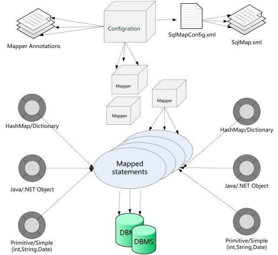

一、SQL注入漏洞基本原理
在常见的web漏洞中，SQL注入漏洞较为常见，危害也较大。攻击者一旦利用系统中存在的SQL注入漏洞来发起攻击，在条件允许的情况下，不仅可以获取整站数据，还可通过进一步的渗透来获取服务器权限，从而进入内网。
注入攻击的本质，是把用户输入的数据当做代码执行。这里有两个关键条件，第一个是用户能够控制输入；第二个是原本程序要执行的代码，拼接了用户输入的数据。接下来说下SQL注入漏洞的原理。
举个栗子。
当用户发送GET请求：
http://www.xxx.com/news.jsp?id=1
这是一个新闻详情页面，会显示出新闻的title和content，程序内部会接收这个id参数传递给SQL语句，SQL如下：
SELECT title,content FROM news WHERE id = 1
这是SQL的原义,也是程序员想要得到的结果,但是如果用户改变了id的内容，修改成如下：
http://www.jd.com/news.jsp?id=1 and 1=2 UNION SELECT userna-me, password FROM admin
此时内部程序执行的SQL语句为：
SELECT title,content FROM news WHERE id = 1 and 1=2 UNION SELECT username, password FROM admin
这条SQL的原义就会被改变，导致将管理员数据表中的用户名显示在页面title位置，密码显示在页面content位置，攻击成功。
二、Mybatis框架介绍
1. Mybatis框架架构
Mybatis框架架构讲解(架构图如下图所示)：
（1）加载配置：配置来源于两个地方，一处是配置文件，一处是Java代码的注解，将SQL的配置信息加载成为一个个MappedStatement对象（包括了传入参数映射配置、执行的SQL语句、结果映射配置），存储在内存中。
（2） SQL解析：当API接口层接收到调用请求时，会接收到传入SQL的ID和传入对象（可以是Map、JavaBean或者基本数据类型），Mybatis会根据SQL的ID找到对应的MappedStatement，然后根据传入参数对象对MappedStatement进行解析，解析后可以得到最终要执行的SQL语句和参数。
（3）SQL执行：将最终得到的SQL和参数拿到数据库进行执行，得到操作数据库的结果。
（4）结果映射：将操作数据库的结果按照映射的配置进行转换，可以转换成HashMap、JavaBean或者基本数据类型，并将最终结果返回。

Mybatis架构图
2. JDBC预编译模式
Mybatis框架作为一款半自动化的持久层框架，其SQL语句都需要我们自己手动编写，此时就需要按照安全编码规范进行开发，以防止SQL注入漏洞的产生。
针对上一节中所举的例子，应用Mybatis框架SQL语句安全写法（即JDBC预编译模式）可以写为：
select * from news where id=#{id}，这种写法可以很好地避免SQL注入漏洞的产生。
3. 动态拼接SQL语句
如果在开发过程中没有采用JDBC的预编译模式，如我们将上述SQL语句写为：select * from news where id=${id}，这种写法就产生了SQL语句的动态拼接。因为”${xxx}”这样格式的参数会直接参与SQL语句的编译，从而不能避免SQL注入攻击。
三、Mybatis框架下易产生SQL注入漏洞场景分析
在基于Mybatis框架的Java白盒代码审计工作中，通常将着手点定位在Mybatis的配置文件中。通过查看这些与数据库交互的配置文件来确定SQL语句中是否存在拼接情况，进而确立跟踪点。通过总结，Mybatis框架下易产生SQL注入漏洞的情况主要分为以下三种：
1. 模糊查询like
还以第一节中提到的新闻详情页面为例，按照新闻标题对新闻进行模糊查询，如果考虑安全编码规范问题，其对应的SQL语句如下：
Select * from news where title like ‘%#{title}%’，
但由于这样写程序会报错，研发人员将SQL查询语句修改如下：
Select * from news where title like ‘%${title}%’，
在这种情况下我们发现程序不再报错，但是此时产生了SQL语句拼接问题，如果java代码层面没有对用户输入的内容做处理势必会产生SQL注入漏洞。
2. in之后的参数
在对新闻进行同条件多值查询的时候，如当用户输入1001,1002,1003…100N时，如果考虑安全编码规范问题，其对应的SQL语句如下：
Select * from news where id in (#{id})，
但由于这样写程序会报错，研发人员将SQL查询语句修改如下：
Select * from news where id in (${id})，
修改SQL语句之后，程序停止报错，但是却引入了SQL语句拼接的问题，如果研发人员没有对用户输入的内容做过滤，势必会产生SQL注入漏洞。
3. order by之后
当根据发布时间、点击量等信息对新闻进行排序的时候，如果考虑安全编码规范问题，其对应的SQL语句如下：
Select * from news where title =‘京东’ order by #{time} asc，
但由于发布时间time不是用户输入的参数，无法使用预编译。研发人员将SQL查询语句修改如下：
Select * from news where title =‘京东’ order by ${time} asc，
修改之后，程序通过预编译，但是产生了SQL语句拼接问题，极有可能引发SQL注入漏洞。
四、Mybatis框架下SQL注入漏洞修复建议1. 模糊查询like SQL注入修复建议
按照新闻标题对新闻进行模糊查询，可将SQL查询语句设计如下：
select * from news where tile like concat(‘%’,#{title}, ‘%’)，
采用预编译机制，避免了SQL语句拼接的问题，从根源上防止了SQL注入漏洞的产生。
2. in之后的参数SQL注入修复建议
在对新闻进行同条件多值查询的时候，可使用Mybatis自带循环指令解决SQL语句动态拼接的问题：
select * from news where id in
<foreach> collection="ids" item="item" open="("separator="," close=")">#{item} </foreach>
3. order by SQL注入修复建议--在Java层面做映射
预编译机制只能处理查询参数，其他地方还需要研发人员根据具体情况来解决。如前面提到的排序情景： Select * from news where title =‘京东’ order by #{time} asc，这里time不是查询参数，无法使用预编译机制，只能这样拼接：Select * from news where title =‘京东’ order by ${time} asc 。
针对这种情况研发人员可以在java层面做映射来进行解决。如当存在发布时间time和点击量click两种排序选择时，我们可以限制用户只能输入1和2。当用户输入1时，我们在代码层面将其映射为time，当用户输入2时，将其映射为click。而当用户输入1和2之外的其他内容时，我们可以将其转换为默认排序选择time(或者click)。